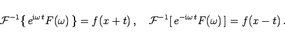

Inhalt Index DeskTop Bronstein

 Integraltransformationen Fourier-Transformation Lösung von Differentialgleichungen mit Hilfe der Fourier-Transformation Partielle Differentialgleichungen
Integraltransformationen Fourier-Transformation Lösung von Differentialgleichungen mit Hilfe der Fourier-Transformation Partielle Differentialgleichungen


Wie die dreidimensionale Wellengleichung (9.102a), so ist auch 15.104a eine partielle Differentialgleichung vom hyperbolischen Typ. Das CAUCHYsche Problem sei durch die Anfangsbedingungen
| (15.104b) |
korrekt gestellt.
| (15.105a) |
Daraus ergibt sich:
Die allgemeine Lösung dieser bekannten Differentialgleichung mit konstanten Koeffizienten lautet
| (15.106a) |
Mit Hilfe der Anfangsbedingungen
| (15.106b) |
lassen sich die Konstanten C1 und C2 bestimmen:
| (15.106c) |
Die Lösung ergibt sich zu
| (15.106d) |
| (15.107a) |
mit Vorteil eingesetzt werden, woraus sich ergibt
|  | (15.107b) |
Die Anwendung der Integrationsregel
| (15.107e) |
Die endgültige Lösung im Originalbereich lautet somit
| (15.108) |